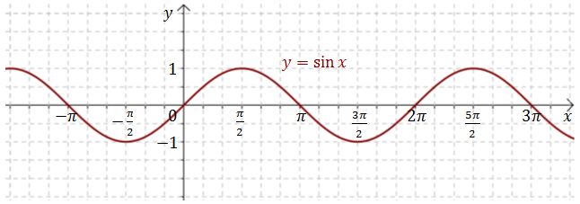
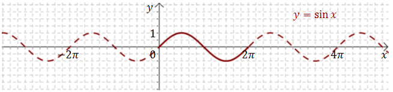
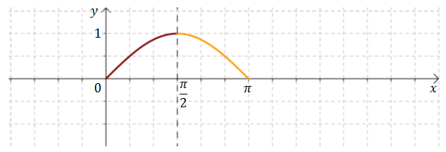
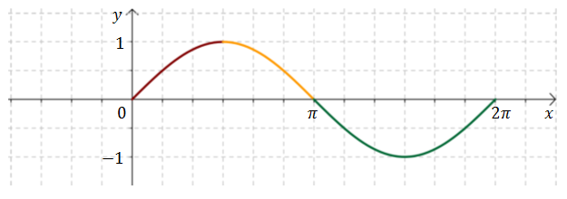
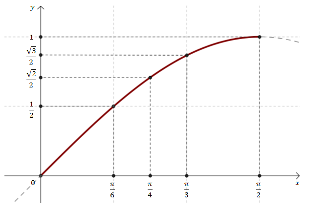
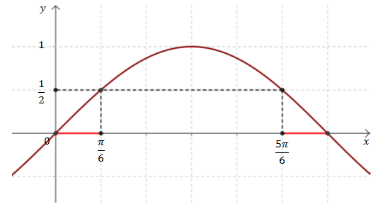
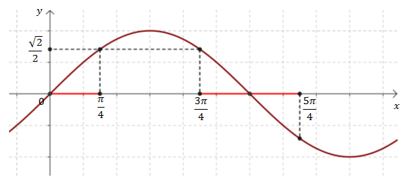

Funkcja
sinus wyraża się wzorem: \[f(x)=\sin
x\] Jej wykresem jest
sinusoida:  Sinus jest funkcją okresową o okresie \(2\pi \). 
Fragment wykresu narysowany linią ciągłą pokazuje jeden pełny okres sinusa, który
powtarza się nieskończenie wiele razy.
Żeby narysować wykres sinusa, to wystarczy znać wartości funkcji dla kątów ostrych,
czyli z przedziału \(\left \langle 0, \frac{\pi }{2} \right \rangle\). W kolejnych przedziałach
można potem odpowiednio powielać otrzymany fragment wykresu (np. odbijając go symetrycznie).
  Przyjrzyjmy się
teraz dokładniej wykresowi sinusa na przedziale \(\left \langle 0, \frac{\pi }{2} \right \rangle\). 
Znając wykres sinusa możemy bardzo łatwo przypominać sobie wartości
trygonometryczne różnych kątów.
Szczególnie łatwo możemy odczytać, że \(\sin \frac{\pi }{6} =
\frac{1}{2}\).
Zobaczmy teraz jak można na podstawie wykresu odczytać wartości sinusa dla kątów
rozwartych.
Oblicz \(\sin 150^\circ \).
Zaczynamy od zamienienia stopni na
radiany: \[150^\circ = \frac{5\pi }{6}\] Teraz zaznaczamy na wykresie sinusa punkt o argumencie
\(\frac{5\pi }{6}\).  Z wykresu odczytujemy, że: \[\sin \frac{5\pi}{6}=\sin
\frac{\pi }{6}=\frac{1}{2}\]
Oblicz \(\sin \frac{5\pi }{4}\).
Zaznaczamy na wykresie funkcji
sinus punkt o argumencie \(x = \frac{5\pi }{4}\).  Z wykresu odczytujemy, że: \[\sin
\frac{5\pi}{4}=-\sin \frac{3\pi}{4}=-\sin \frac{\pi }{4}=-\frac{\sqrt{2}}{2}\]